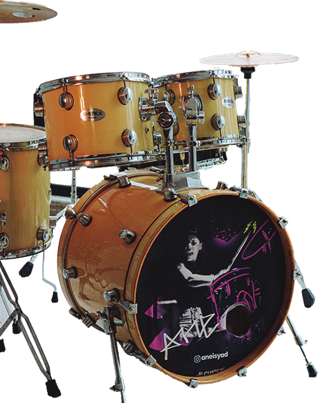

Fuera de la partitura
El viaje de la música clásica hacia los sonidos de hoy
Acompáñame en este viaje de su evolución.
Tabla de contenido
01
Música clásica
Páginas 5–8
 03
De la calle a la sinfónica
Páginas 13–15
03
De la calle a la sinfónica
Páginas 13–15
- Conoce cómo empezó
- Símbolo de poder y prestigio
- Época de rebelión
- La verdadera revolución

02 Rock y más Páginas 9–12- Nuevas formas de escuchar
- Ópera y guitarras
03
De la calle a la sinfónica
Páginas 13–15
- La vena musical
- Matrimonio perfecto
- El flow del violín